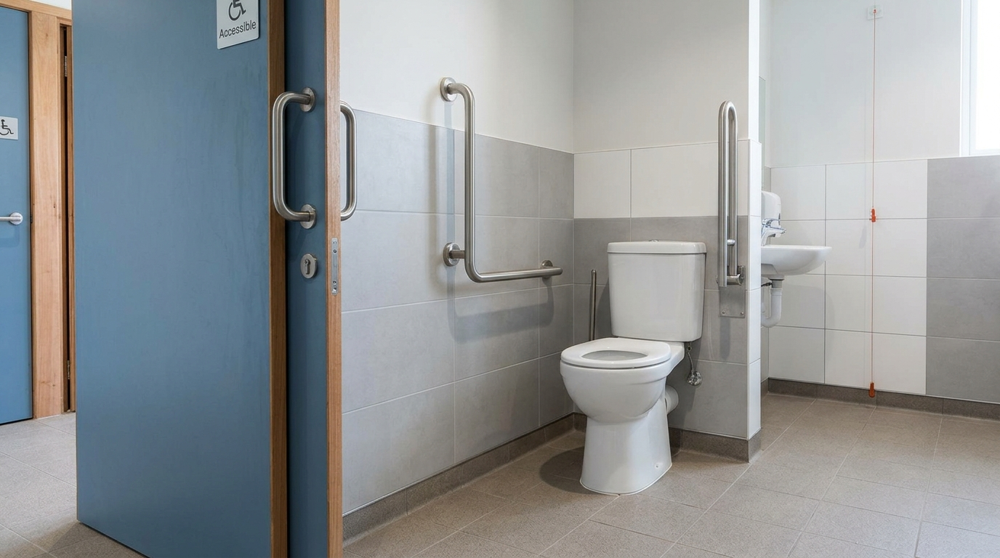

Acessibilidade em casa
A casa é o lugar onde passamos boa parte da vida. Um ambiente acessível dá segurança, evita acidentes e permite que cada pessoa faça suas atividades com independência, em qualquer idade.

Entrada, portas e corredores
- Entrada sem degrau: quando há desnível, uma rampa com inclinação suave resolve. A norma técnica ABNT NBR 9050 indica inclinação máxima de 8,33% para rampas.
- Portas largas: a NBR 9050 indica vão livre de pelo menos 80 cm, o que permite a passagem de cadeira de rodas, andador ou muletas.
- Maçanetas de alavanca são mais fáceis de abrir do que as redondas, principalmente para quem tem pouca força ou dificuldade nas mãos.
- Corredores livres, sem móveis, tapetes soltos ou fios pelo caminho, evitam tropeços.
- Espaço para girar: uma cadeira de rodas precisa de uma área de cerca de 1,5 m de diâmetro para dar uma volta completa.
Banheiro
O banheiro é o cômodo onde mais acontecem quedas dentro de casa, por causa do piso molhado e liso. Algumas adaptações importantes:
- barras de apoio ao lado do vaso sanitário e dentro do box;
- piso antiderrapante e tapete com base de borracha;
- box sem degrau, com espaço para entrar com cadeira de banho;
- banco ou cadeira de banho fixa ou removível;
- pia sem coluna embaixo, para quem precisa se aproximar sentado;
- torneiras de alavanca e chuveiro com ducha manual.
Cozinha e área de serviço
- Bancadas e pias em altura que dê para usar sentado ou em pé.
- Armários e prateleiras ao alcance, com os objetos mais usados na altura das mãos.
- Fogão com acendimento automático e bocas na frente, para não precisar esticar o braço sobre o fogo.
- Espaço livre na frente de geladeira, fogão e máquina de lavar.
Quarto e sala
- Cama em altura que permita sentar e levantar com facilidade.
- Circulação livre ao redor da cama e do sofá.
- Interruptores e tomadas em altura confortável, sem precisar se abaixar ou esticar.
- Objetos de uso diário em lugares fixos, o que ajuda muito pessoas com baixa visão.
Iluminação, avisos e segurança
- Boa iluminação em escadas, corredores e banheiro, com luz de vigília durante a noite.
- Contraste de cores: um degrau pintado com cor diferente do piso é mais fácil de ver.
- Campainha com luz e alarme de fumaça com sinal luminoso ajudam pessoas surdas ou com dificuldade de ouvir.
- Escadas com corrimão dos dois lados e fita antiderrapante nos degraus.
Tecnologia dentro de casa
Assistentes de voz, lâmpadas e tomadas inteligentes, fechaduras eletrônicas e aspiradores robôs podem ser controlados por voz ou pelo celular. Para pessoas com dificuldade de movimento ou de visão, isso significa mais independência no dia a dia.
Lista rápida para conferir sua casa
- Dá para entrar em casa sem degrau ou com rampa?
- As portas têm pelo menos 80 cm de vão livre?
- O banheiro tem piso antiderrapante e barras de apoio?
- Os corredores estão livres de tapetes soltos e fios?
- A iluminação é boa em todos os cômodos, inclusive à noite?
- Os objetos mais usados estão ao alcance das mãos?